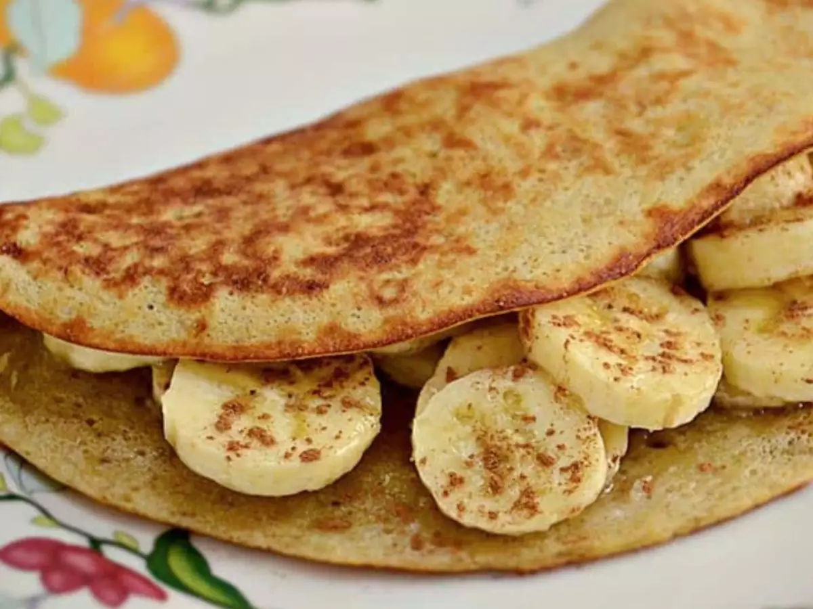

CREPIOCA

Ingredientes (1 porção):
1 colher de goma de tapioca
1 ovo
adoçante
sal
*Para crepioca doce, adicione adoçante a gosto
*Para crepioca salgada, adicione uma pitada de sal a gosto
Modo de preparo: 5 min
1- Em um recipiente, bata bem o ovo.
2- Adicione a goma de tapioca e bata novamente (pode bater com um garfo mesmo), até obter uma mistura homogênea.
3- Coloque todo o conteúdo em uma frigideira antiaderente levemente quente e mantenha em fogo baixo.
4- Deixe por alguns segundos e vire para dourar do outro lado.
5- Não é necessário untar com óleo, azeite ou manteiga.